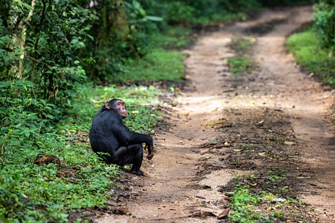
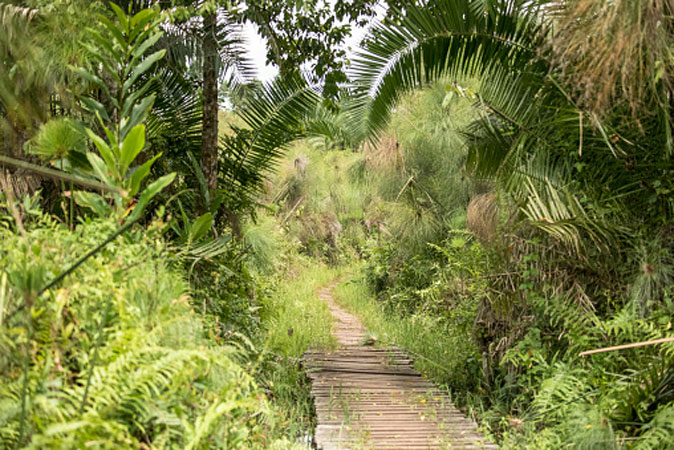
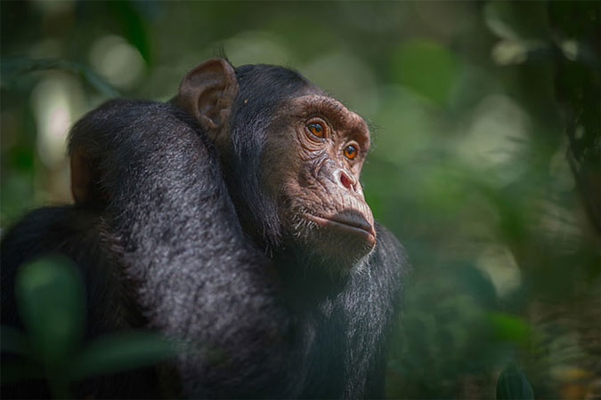
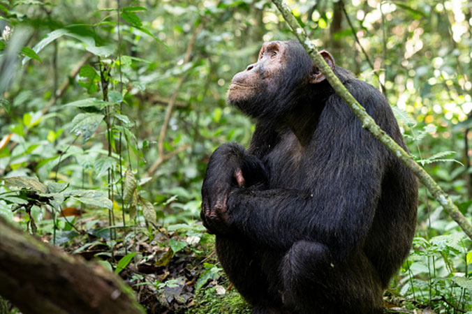

Kibale National Park
Kibale National Park is located in the western part of Uganda about 348km from Kampala and about 26km south-east
of the beautiful Fort Portal town. Kibale Forest National Park is one of the best safari destinations in Africa
for chimpanzee trekking safaris and has the highest number and diversity of primates in East Africa.
There are 13 species of primates including chimpanzees living within its 795km2 land cover with the most
beautiful and most diversified tracts of tropical forest in the whole of Uganda. The Forest covering predominates
in the central and northern part of the park on the raised Fort Portal plateau. At the park’s northern tip,
Kibale is highest and stands 1590m above sea level

Expectations
Chimpanzee Habituation Experience
Birding
Community Visits
Nature Walk
Chimpanzee Tracking

Chimpanzee Habituation Experience
Chimpanzee habituation involves joining our habituation research team as they carry out their daily assignment
of making a community of chimpanzees accustomed to human visits. This is a great experience for researchers as
well as photographers who would love to spend a bit more time with the chimps. For half-a-day tourists participat
ing in the CHEX activity will need to secure a chimpanzee habituation permit. Like chimpanzee tracking, this act
ivity starts with a briefing at the park headquarters, however, this is much earlier at around 6:30 AM
Day 02: Morning game drive and afternoon boat cruise to the base of the falls.
Birding
There are over 375 recorded bird species in Kibale National Park including one of Uganda’s most sought-after
birds, the Green-breasted pitta. Birding in Kibale happens all year round and like all other park activities,
tourists will be accompanied by one of our expert ranger guides.
Nature Walks
Aside from chimpanzees and the park’s many primate species, tourists can pick some interest in the park’s nature
walks to discover some of its residents including mammals like the duikers, forest hogs, butterflies, and the
rich vegetation. There are also several amphibian and reptile species as well. The park has a resident populati
on of African forest elephants as well, although these can be aggressive and is partly why a ranger guide must
accompany tourists at all times. Night nature walks will offer chances to see some of the nocturnal animals like
bush babies, tree hyraxes, and civets.
Chimpanzee Tracking
Kibale National Park is most popular for its population of chimpanzees and is considered the best place to track
wild chimpanzees on earth. Chimpanzee tracking is the ultimate highlight for visitors to this park. Over several
years of conservation and habituation, the chance of seeing them has risen to over 95%. Tourists can choose from
either a morning or afternoon trek both beginning with a necessary briefing and led by an expert ranger guide.
Treks can typically last anywhere from 2 to 5 hours depending on where the animals are on a particular day. A
maximum of 6 tourists per group is permitted to spend a full hour with a community of chimpanzees. All touri
sts on chimpanzee tracking safaris to Bwindi will need a chimpanzee permit
Community Visits
Kibale National Park is located in one of the most culturally unique spots in Uganda. Tourists can easily com
bine a chimpanzee tracking safari with a visit to the Bigodi community, a cycling adventure or community walk
through one of the tree plantations, coffee tours, a visit to the mysterious caves at Amabere Ga Nyinamwiru
as well as exploring some of Toro kingdom’s other cultural sites including the king’s own palace.

Packages
Inclusions;
Park fees
All activities
Acommodation
A professional driver/guide
All transportation
All Taxes/VAT
Meals Plan
Drinking water and fruits
Exclusions;
International flights
Additional accommodation before and at the end of the tour
Tips and Visa
Personal items
Government imposed increase of taxes and/or park fees
Book Now